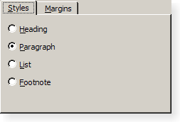
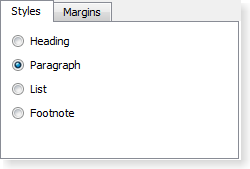
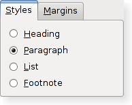

Qt Widget Gallery
Qt's support for widget styles and themes enables your application to fit in with the native desktop environment. Below, you can find links to the various widget styles that are supplied with Qt.
Windows XP Style Widget Gallery The Windows XP style is provided by QWindowsXPStyle. |  The Windows style is provided by QWindowsStyle. |  Windows Vista Style Widget Gallery The Windows Vista style is provided by QWindowsVistaStyle. |
Macintosh Style Widget Gallery The Macintosh style is provided by QMacStyle. |  The GTK style is provided by QGtkStyle. |
The Fusion style is provided by QFusionStyle. |